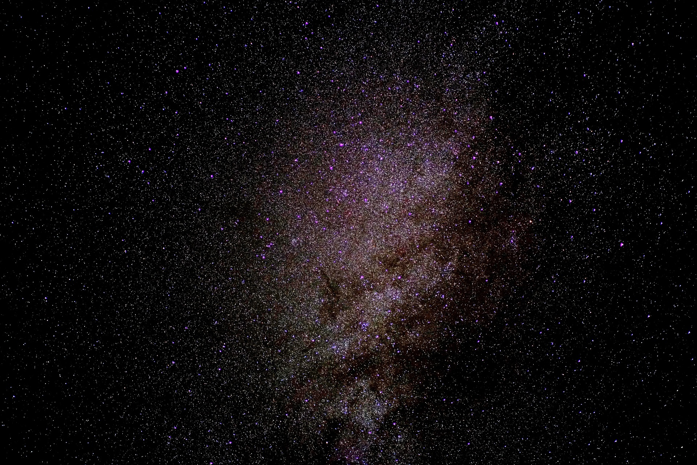

STAR
Bintang adalah bola plasma besar yang memancarkan cahaya ke seluruh alam semesta. Sementara hanya ada satu bintang di tata surya kita, ada miliaran bintang di seluruh galaksi kita dan secara eksponensial lebih banyak di miliaran galaksi di alam semesta.
Menurut Encyclopedia Britannica, Bintang merupakan setiap benda langit gas bercahaya besar yang bersinar oleh radiasi yang berasal dari sumber energi internalnya.
RASI BINTANG

Sirius - Alfa Canis Mayoris
Sirus adalah bintang paling terang. Nama ini diambil dari Bahasa Yunani dari kata “Seirios” yang artinya “berkilau”. Bintang ini ada di konstelasi Canis Mayor. Bintang ini diketahui penting bagi peradaban Mesir Kuno dan Jazirah Arab yang menjadi tanda banjir tahunan di Sungai Nil. Sirius awalnya merupakan sistem bintang biru berganda (Sirius A dan B).
Canopus
Canopus yang menjadi bintang paling terang kedua. Nama “Canopus” diambil dari seorang navigator kapal bernama Canobus yang bekerja dengan Raja Menelaus dari Sparta saat Perang Troya. Bintang ini terletak di konstelasi Carina. Canopus termasuk dalam spektrun A911 yang berarti bintang ini masuk dalam kelompok bintang raksasa terang (kelas II) dengan tipe A9. Bintang Canopus memiliki jarak 310 tahun cahaya dengan ukiran 71 kali matahari.

Alpha Centauri
Nama bintang di langit yaitu Alpha Centauri. Bintang ini memiliki sistem bintang ganda dengan masing-masing bagian mengorbit suatu titik tertentu. Bintang ini membutuhkan waktu 80 tahun untuk mengorbit titik tersebut. Kedua bintang ini terpisah sejauh 35,6 hingga 11,2 satuan astronomi. Kedua bintang Alpha Centauri memiliki bentuk mirip seperti matahari karena terletak di deret utama (kelas V) dengan tipe bintang G dan K. Alpha Centauri memiliki jarak 4,4 tahun cahaya dengan ukuran 1,22 dan 0,86 kali matahari.

Arcturus – Alfa Bootis
Nama Arcturus berasal dari Bahasa Yunani Kuno, dari kata Arktouros yang artinya penjaga beruang. Bintang ini berada disebelah utara ekuator langit. Arcturus memiliki jarak 37 tahun cahaya dengan ukuran mencapai 25 kali matahari. Bintang ini tergolong sebagai bintang raksasa kelas III dan bertipe K0.

Vega – Alfa Lyrae
Vega menjadi nama bintang selanjutnya yang juga tak kalah terang dengan bintang sebelumnya. Bintang bega memiliki kecerlangan visual +0.03 dan masuk dalam kelompok kelas spektrum A0Va. Yang artinya bintang ini tergolong dalam deret utama (Kelas V) dan bertipe A0. Bintang yang juga bermaknan elang jatuh ini memiliki jarak 25 tahun cahaya dan berukuran 2,4 kali matahari. Bintang yang satu ini tidak pernah terbit di lintang 51o LS atau lebih dan tidak pernah terbenam di lintang 51o LU atau lebih.

Capella – Alfa Aurigae
Capella menjadi nama bintang di langit lainnya. Nama tersebut diambil dari Bahasa Latin yang artinya kambing kecil. Capella merupakan bintang kuartet dengan dua pasang bintang biner yaitu Capella Aa dengan Capella Ab dan Capella H dengan Capella L. Bintang Capella memiliki jarak 43 tahun cahaya dengan ukuran yang berbeda dari masing-masing pasangan bintang tersebut. Ukuran Capella Aa dan Ab sebesar 2,4 kali matahari, sedangkan Capella H dan L hanya 0,54 kali matahari.
Rigel – Beta Orionis
Nama tersebut diadopsi dari Bahasa Arah “Rijil Al-Jauzah” atau “Rijil Al-Jabbar” yang artinya “kaki sang pemburu (orion)”. Nama merupakan bintang tripel yang terdiri atas Rigel A atau Algebar, Rigel B, dan Rigel C. Bintang yang terletak di konstelasi Orion ini memiliki jarak 860 tahun cahaya dengan ukuran terbesar 79 kali matahari. Ukuran terbesar dimiliki oleh bintang Rigel A.

Procyon – Alfa Canis Minoris
Nama bintang ini berasal dari Bahasa Yunani Kuno yang memiliki makna sebelum atau di belakang anjing. Procyon merupakan bintang ganda yang terdiri atas Procyon A dan B. kecerlangan gabungan keduanya sebesar +0,34. Jarak bintang ini yaitu 11,5 tahun cahaya. Ukurannya dua kali mahari untuk Procyon A dan 1/80 kalo matahari untuk Procyon B.

Achernar – Alfa Eridani
Nama Achernar diambil dari Bahasa Arah yang artinya ujung atau hilir sungai. Bintang ini terletak di konstelasi Eridaus. Achernar memiliki jarak 139 cahaya dengan ukuran 11,4kali matahari. Bintang ini masuk dalam kelas spektrum B6Vep. Artinya bintang tersebut ada di deret utama (kelas V) dengan tipe bintang variabel BE. Achernar juga bisa berotasi sangat cepat sehingga memiliki bentuk lebih pepat di kutub-kutubnya dengan jari-jari kutub lebih pendek dibandingkan ekuatornya.
Betelgeuse – Alfa Orionis
Bintang ini terletak di konstelasi orion dengan kecerlangan visual antara +0,0 sampai +1,6. Betelgeuse merupakan bintang variabel semiregular kemerahan yang memiliki rentang kecerlangan paling lebar dibandingkan bintang bermagnitudo pertama. Kecerlangan yang dimilikinya membuat Betelgeuse masuk dalam kategori bintang maharaksasa merah. Jaraknya sekitar 548 tahun cahaya dengan ikuran 764 kali matahari. Betelgeuse juga termasuk bintang besar yang bisa dilihat tanpa alat khusus.